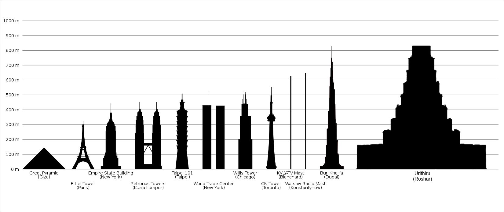

Urithiru: Ciudad de Reyes
UBICACION, GEOGRAFIA & ARQUITECTURA
“ Se decía que Urithiru era el centro de los Reinos Plateados, una ciudad que albergaba diez tronos, uno para cada rey. Era la ciudad más majestuosa, más sorprendente y más importante de todo el mundo. ”
—Opinión de Jasnah sobre Urithiru.[1]
Urithiru ciudad de Caballeros Radiantes.[2]
Urithiru es una ciudad-torre en Roshar que funcionó como hogar de los Caballeros Radiantes y punto central de los Reinos Plateados durante las Épocas Heráldicas.[1] En la actualidad, sirve como cuartel general de las fuerzas que se oponen a Odium, incluyendo la coalición de monarcas, los refundados Caballeros Radiantes y los restantes soldados y nobleza de alezi. La actual reina de Alezkar gobierna desde la torre, [3] aunque Dalinar y Navani Kholin han sido reconocidos como el rey y la reina de Urithiru.[4] La ciudad sirve como manifestación física del spren de Forjador de Vínculos el Hermano.
UBICACION
“ Aunque muchos deseaban que Urithiru fuera construida en Alezela, obviamente no podía ser. Y por eso pedimos que se emplazara al oeste, en el lugar más cercano a Honor. ”
—El Vavibrar, verso 1804.[5]
Urithiru en el mapa de Roshar.[6]
Urithiru se encuentra casi exactamente en el centro del continente roshariano, en Las Montañas de Ur. Se encuentra en la parte occidental de la cordillera, en la frontera de Emul y Gran Hexi.[7] La torre se encuentra en el lado este de una de esas montañas, apoyada contra dos laderas.[8][9]
GEOGRAFIA
La meseta en la que se encuentra la torre se encuentra a una altura considerable. El aire es lo suficientemente poco denso como para dificultar la actividad física.[10] Los acantilados debajo se extienden más allá de lo que el ojo puede ver.[11] Esta ubicación es lo suficientemente alta como para que tanto las Altas Tormentas como la Tormenta Eterna pasen por debajo, lo que dificulta que los ocupantes actuales de la torre obtengan luz tormentosa.[12]
Históricamente, ha habido cierto desacuerdo sobre si se puede acceder a Urithiru por otros medios que no sean a través de Puertas Juradas o volando. Los antiguos cronistas Varala y Sinbian afirmaron que era imposible, pero en la octava parábola de Nohadon de El Camino de los Reyes, afirma que caminó desde Abamabar hasta Urithiru (lo que confirma en el sueño de Dalinar, diciendo que no usó una Puerta Jurada, solo un guía, que él cree que no estaba "haciendo trampa" de ninguna manera).[13][14] Como se revela más tarde, hay una entrada al pie de la montaña que se puede usar para salir de la torre a pie.[15]
Hay un pueblo sin nombre en las faldas de la montaña al sur de la torre,[16] pero aparentemente no es visible desde la torre, ya que todo lo que Dalinar puede ver son nubes y rocas.[17] Además, Urithiru se encuentra relativamente cerca de El Valle de la Vigilante Nocturna.[7]
ARQUITECTURA
“ Allí no había nubes que trajeran oscuridad: ese lugar se alzaba por encima de toda ellas. Urithiru gobernaba incluso a las nubes. ”
—Szeth reflexionando sobre la torre.[16]

Urithiru dibujado por Shallan Davar.[8]
Urithiru es tan ancho como una ciudad y tan alto como una pequeña montaña.[20] Consta de 10 niveles semicirculares, con cada nivel de 18 pisos de altura, para un total de 180 pisos.[21] Con aproximadamente 4.5m por piso, la torre mide poco más de 800m de altura.[22] Al bajar, cada nivel es más ancho que el que está encima, y los techos de los niveles más anchos tienen campos y jardines construidos sobre ellos. Hay numerosos balcones en los lados de la torre. El nivel inferior tiene amplias secciones que sobresalen en el perímetro, cada una del tamaño de una meseta.[23] Estas áreas tienen ranuras, que en el pasado eran surcos para cultivos, y jardineras alrededor de los bordes.[24] Enfrente de la torre hay una enorme plaza rodeada por las diez plataformas de la Puerta Jurada.[8]

Urithiru comparado con otras ciudades del mundo real.
Los niveles inferiores "se fusionan" con las montañas a ambos lados, pero el centro y los niveles superiores tienen un lado plano en el lado de la tormenta. Las habitaciones de este lado plano tienen ventanas que dan al Este. Las ventanas de vidrio sobrevivieron milagrosamente a miles de años de abandono completamente intactas.
La columna central de Urithiru es una ventana sólida, también orientada hacia el Este. Esta columna tiene una huella del tamaño de un salón de baile y está llena de docenas de ascensores, que se parecen a los balcones exteriores y suben y bajan por canales verticales en las paredes utilizando Luz tormentosa. Las vigas grandes que sostienen la columna central parecen ser bastante prominentes y se usan como puntos de referencia al navegar por la torre.
Debido a que la torre es lo suficientemente alta como para estar por encima de la mayoría de las Altas Tormentas, existen largas cadenas con jaulas para bajar las piedras preciosas y renovar la luz tormentosa.
El interior de Urithiru está lleno de túneles que se retuercen en extrañas curvas, que según la hipótesis de Dalinar se hicieron para engañar a los invasores. Los eruditos de Navani también han encontrado grupos de habitaciones con formas extrañas y murales de animales fantásticos (incluidos algunos que podrían ser leones, aunque no existen en Roshar), junto con oro y cobre incrustados en las paredes, presumiblemente fabriales que no han sido capaces de identificar/comprender.
La torre se compone de múltiples habitaciones de diferente funcionalidad, que incluyen dormitorios, salas de reuniones, bibliotecas y baños. La mayoría de ellos tienen techos altos.
Cada túnel en Urithiru tiene patrones distintivos de estratos. Los colores de los estratos conocidos incluyen tonos de marrón, amarillo, rojo, naranja y verde esmeralda, aunque parece que solo los Potenciadores son capaces de percibir los distintos colores. La piedra en sí es suave al tacto y lo suficientemente dura como para que no se pueda rayar con un cuchillo.
Shallan teoriza que los estratos podrían ser venas, aunque no está segura de lo que transportarían.
Un Portador del Vacío observando la torre.[25]
Szeth volando desde la torre.[26]
MECANISMOS
Urithiru muestra una serie de propiedades inusuales que permiten a los humanos sobrevivir a pesar de su gran altitud. Se cree que estos sistemas están alimentados o relacionados de alguna manera con el spren conocido como el Hermano. Sin embargo, en algún momento, el Hermano se retiró de la humanidad para permanecer dormido dentro de la torre, pero luego fue despertado por Rabeniel. Durante la invasión de la torre en 1175, El Hermano se unen a Navani Kholin, poniendo en funcionamiento todas los fabriales de la torre. Los sistemas Fabrial que funcionaron antes del despertar del Hermano incluyen aquellos para aumentar la presión, la temperatura y las condiciones generales que fomentan el crecimiento de las plantas. Navani también teoriza que el aire que circula a través de varios conductos está alimentado por algún tipo de fabrial. Además, los ascensores fabriales que conectan los pisos de Urithiru comienzan a funcionar cuando se insertan piedras preciosas. Las gemas del archivo de gemas que conservan grabaciones de voces humanas también podrían considerarse fabriales.
Navani probando un fabrial nuevo.[27]